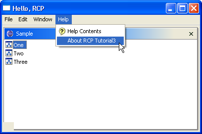

| Eclipse Article |

The Rich Client Platform (RCP) lets you pick and choose functionality from Eclipse for use in your own applications. Parts 1 and 2 of this tutorial introduced you to the platform and some of the configuration classes it provides. Part 3 discusses how to add functionality such as menus, views, and help files.
By Ed Burnette, SAS Institute Inc.
June 25, 2004
Much of our discussion in the previous two parts focused on taking things away from the platform - turning off toolbars, getting rid of menus, and so forth. For this installment we're going to look at putting things back in. All source code for the tutorial can be downloaded from the Eclipse project here.
Let's start with a view. Eclipse's Plug-in Development Environment provides a nice set of extension templates to get you started writing sample views, editors, menus, and other components. Unfortunately, as of this writing, they are almost useless for RCP development because the code produced introduces all sorts of dependencies on IDE and resource packages and plug-ins.
 The rule of thumb is that anything that references a resource is
not intended for RCP developers because of the extra code
and dependencies on workspaces it
pulls in.
So if you see the
The rule of thumb is that anything that references a resource is
not intended for RCP developers because of the extra code
and dependencies on workspaces it
pulls in.
So if you see the org.eclipse.core.resources
plug-in in your dependency list, or see an import for
some class from that package, you're probably doing something wrong.
This is not a hard and fast rule though, so
resources should be considered an optional
part of the Rich Client Platform.
To create a view without the templates, you can use the schema-based extension wizards from the Plug-in Manifest editor (Extensions pane > Add > Generic Wizards > Schema-based Extensions) or simply edit the XML in the Source pane. Either way, you want to end up with extension XML like this:
<extension point="org.eclipse.ui.views"> <category name="SampleCategory" id="org.eclipse.ui.tutorials.rcp.part3.viewCategory"> </category> <view name="Sample" icon="icons/sample.gif" category="org.eclipse.ui.tutorials.rcp.part3.viewCategory" class="org.eclipse.ui.tutorials.rcp.part3.views.SampleView" id="org.eclipse.ui.tutorials.rcp.part3.views.SampleView"> </view> </extension>
The view category ()
is a way to organize your views in the
Show Views dialog.
The class ()
extends the ViewPart abstract class as shown below:
public class SampleView extends ViewPart {
public static final String ID_VIEW =
"org.eclipse.ui.tutorials.rcp.part3.views.SampleView"; //$NON-NLS-1$
private TableViewer viewer;
public SampleView() {
}
public void createPartControl(Composite parent) {
viewer =
new TableViewer(parent, SWT.MULTI | SWT.H_SCROLL | SWT.V_SCROLL);
viewer.setContentProvider(new ViewContentProvider());
viewer.setLabelProvider(new ViewLabelProvider());
viewer.setInput(this);
}
public void setFocus() {
viewer.getControl().setFocus();
}
}
Defining constants that start with ID_
()
is a pattern you'll see
used over and over again in the Eclipse source code.
Here we use it to duplicate the same id used in the
plug-in manifest.
This will be used later when we need a reference to the view.
The most important part of this class is the createPartControl method
().
It's where you create your JFace or SWT controls that make
up the view.
The rest of the source was can be found in the example project.
View programming is beyond the scope of this tutorial
but you can see the reference section for more information.
If you run the code now you won't actually see anything different.
Why? Because your new view can't appear unless it is added
to the current perspective.
You can do this through code or though the org.eclipse.ui.perspectiveExtensions
extension.
We'll choose the former because it's a little more flexible.
To do this, go back to the RcpPerspective class
defined earlier and modify it to look like this:
public class RcpPerspective implements IPerspectiveFactory {
public static final String ID_PERSPECTIVE =
"org.eclipse.ui.tutorials.rcp.part3.RcpPerspective"; //$NON-NLS-1$
public RcpPerspective() {
}
public void createInitialLayout(IPageLayout layout) {
layout.setEditorAreaVisible(false);
layout.addView(
SampleView.ID_VIEW,
IPageLayout.TOP,
IPageLayout.RATIO_MAX,
IPageLayout.ID_EDITOR_AREA);
layout.addPerspectiveShortcut(ID_PERSPECTIVE);
layout.addShowViewShortcut(SampleView.ID_VIEW);
}
}
Notes:
| Again, just get in the habit of defining a constant for all strings, especially ids. | |
| The Platform supports editors but we're not using one for this example. Therefore you need to turn off the editor area so you won't have a big blank space in the middle of your Workbench Window. | |
| This is the most important part of the class. It adds the view to the perspective so it will be visible by default. The positioning parameters say to place this view above the editor area and let it take 100% of the Workbench Window. This might be a little strange since we don't have an editor area but it's lurking around somewhere even if it's invisible. As you add more than one view to your application you can define the default stacking and layout of your views here. | |
This method causes the perspective to be
on the short list if you implement the PERSPECTIVES_SHORTLIST
menu item (see the sample code for an example).
Without it, the perspective will only be on the long list seen
when the user selects Window > Open Perspective > Other (or whatever
the equivalent menu path is in your application).
| |
| Same thing, only for views. |
 To remember the user's layout and window sizes
for the next time they start your application, add
To remember the user's layout and window sizes
for the next time they start your application, add
configurer.setSaveAndRestore(true);
to the initialize method of WorkbenchAdvisor.
An example of this can be found in the sample project.
By default, views will be moveable, resizeable, and closable. Often you don't want that flexibility. For example, if you're writing an order entry application for unsophisticated users, you don't want to have to answer help desk questions about what to do if somebody accidentally closes the form view. For this reason Eclipse 3.0 introduces the notion of fixed perspectives and fixed views.
A fixed view is a view that cannot be closed.
The title bar of the view doesn't even have a close button.
To create one of these you can use the setFixed()
method on IPageLayout.
A better way might be to use a fixed perspective.
A fixed perspective makes all of the views it contains fixed,
plus it prevents any of them from being moved or resized.
To make a perspective fixed, simply add the fixed="true"
attribute to its definition,
for example:
<extension
point="org.eclipse.ui.perspectives">
<perspective
name="%perspectiveName"
icon="icons/sample.gif"
fixed="true"
class="org.eclipse.ui.tutorials.rcp.part3.RcpPerspective"
id="org.eclipse.ui.tutorials.rcp.part3.RcpPerspective">
</perspective>
</extension>
By using a fixed perspective and turning off the shortcut bar, you can lock the user into one perspective and hide the concept of perspectives from them altogether.
Letting you configure all the menus was one of the first requirements of the RCP. There are two ways to add menus in an RCP application:
WorkbenchAdvisor.fillActionBars
org.eclipse.ui.actionSets in the plug-in manifest
fillActionBars is the only way to reference built-in
Workbench actions, so we'll use it for that purpose.
Everything else can be contributed by the actionSets extension point.
Both methods will be demonstrated here.
Although the example application does not use
toolbars, they are very similar to menus.
First let's take a look at fillActionBars:
public void fillActionBars(
IWorkbenchWindow window,
IActionBarConfigurer configurer,
int flags) {
super.fillActionBars(window, configurer, flags);
if ((flags & FILL_MENU_BAR) != 0) {
fillMenuBar(window, configurer);
}
}
fillActionBars is takes a flags parameter
()
that indicates what
the code should really do.
There are flag bits for filling in the menu bar, the tool bar,
the status line, and even a bit for whether or not this is a fake
request for preference dialogs (FILL_PROXY).
The author has had some bad experiences with flags like this,
so the example code just calls a helper function called fillMenuBar
to do the actual filling.
Here's the code for fillMenuBar:
private void fillMenuBar(
IWorkbenchWindow window,
IActionBarConfigurer configurer) {
IMenuManager menuBar = configurer.getMenuManager();
menuBar.add(createFileMenu(window));
menuBar.add(createEditMenu(window));
menuBar.add(createWindowMenu(window));
menuBar.add(createHelpMenu(window));
}
For this example we want to create four top-level menus: File, Edit, Window, and Help. These correspond to the menus of the same name in the Eclipse IDE. For a real application you may not want all these, or you might want to call them something different. See figure 1 for an example.
Figure 1. The Workbench menu bar is defined
in the fillActionBars method of WorkbenchAdvisor,
and then added to by the manifests of
all plug-ins that extend org.eclipse.ui.actionSets.
The code for all these methods can be found in the example project. Let's just take a closer look at one of of them, the File menu:
private MenuManager createFileMenu(IWorkbenchWindow window) {
MenuManager menu = new MenuManager(Messages.getString("File"), //$NON-NLS-1$
IWorkbenchActionConstants.M_FILE);
menu.add(new GroupMarker(IWorkbenchActionConstants.FILE_START));
menu.add(new GroupMarker(IWorkbenchActionConstants.MB_ADDITIONS));
menu.add(ActionFactory.QUIT.create(window));
menu.add(new GroupMarker(IWorkbenchActionConstants.FILE_END));
return menu;
}
All these menus work the same way.
First you create a MenuManager for the menu
()
using the message file to lookup the actual human-readable title.
Then you add all the menu items and return the manager.
See the references section for more information about defining views and menus.
Next, you create some placeholders
()
where additional
menu items can be added by plug-ins,
and one real action supplied by the Workbench: the Quit action
().
A list of supported Workbench actions can be found by
looking at the Javadoc for ActionFactory and
ContributionItemFactory.
 There are a number of standard placeholder names
for menus and toolbars
that you should use when trying to make yours work just
like the ones in the IDE.
By using these predefined groups, plug-ins that contribute menu
and toolbar items to the Eclipse IDE can also contribute them
to your RCP application.
These aren't documented anywhere other than in the Javadoc for
There are a number of standard placeholder names
for menus and toolbars
that you should use when trying to make yours work just
like the ones in the IDE.
By using these predefined groups, plug-ins that contribute menu
and toolbar items to the Eclipse IDE can also contribute them
to your RCP application.
These aren't documented anywhere other than in the Javadoc for
IWorkbenchActionConstants, and even there you won't find any guidance
for their intended order.
The sample code that accompanies this tutorial was created by looking at the
IDEWorkbenchAdvisor class used by the Eclipse IDE.
One of the coolest features of the RCP is its help system. Simply by providing the table of contents in XML format and the documents in HTML, you can give your users a searchable help system with no coding on your part. First, you add an extension to your plug-in manifest like this:
<extension point="org.eclipse.help.toc"> <toc file="book.xml" primary="true"> </toc> </extension>
Then you create a table of contents file (book.xml in this example) to define a hierarchy of help topics. Not all the topics have to be in the contents but it is good practice to do so. Here's an example you can use to get started:
<toc label="RCP Help Sample" topic="html/book.html"> <topic label="Overview" href="html/overview.html"/> </toc>
See the references section for more information on writing and organizing help files, including internationalization.
When you're debugging or deploying an RCP application that includes help you'll need to include several more help related plug-ins. Here's the current list (subject to change in future builds):
org.apache.ant
org.apache.lucene
org.eclipse.help.appserver
org.eclipse.help.base
org.eclipse.help.ui
org.eclipse.help.webapp
org.eclipse.tomcat
See createHelpMenu() in the example for code
to add the Help Contents action to your Help menu.
When you select it, this action will fire up a
help browser like the one shown in figure 2.
Figure 2. The Rich Client Platform provides a full featured online help framework so you don't have to. All you do is provide the content.
As you add more resources to your plug-in such as html files, icons, the help table of contents, and so forth, don't forget to update your build.properties file to include all the files and/or directories that need to be available to the plug-in at run time. Here is the updated build.properties XML file containing everything needed for the example in this section:
bin.includes = plugin.xml,\
*.jar,\
part3.jar,\
plugin.properties,\
book.xml,\
html/,\
icons/
source.part3.jar = src/
In this part of the tutorial, we added a simple view, some menus, and help files to a create a sample RCP application. Hopefully you can can use this example as a reference in your own projects. All the sample code for this part may be viewed at the Eclipse project here. You can use Eclipse's built-in CVS client to download the source to your workspace.
Congratulations! If you made it this far, you are well on your way to developing your own Rich Client Platform applications. Take a look at the references below for more information and community sites and mailing lists where you can meet other people using RCP.
RCP Tutorial Part 1
RCP Tutorial Part 2
Rich Client Platform Facilities
Creating an Eclipse View
Contributing a Little Help
Eclipse Powered (rich client plug-ins and resources)
IBM is trademark of International Business Machines Corporation in the United States, other countries, or both.
Java and all Java-based trademarks and logos are trademarks or registered trademarks of Sun Microsystems, Inc. in the United States, other countries, or both.
Microsoft and Windows are trademarks of Microsoft Corporation in the United States, other countries, or both.
Other company, product, and service names may be trademarks or service marks of others.